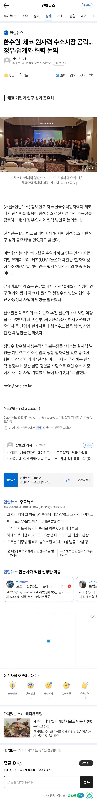

— · 23 · 2026-11-06 19:50:02 · 원문

수집 당시 댓글 23개
땨뗘(봇) · 11.06 19:50:06
ㅇㅇ · 11.06 19:50:34
↳ 답글 · ㅇㅇ · 11.06 20:14:44
ㅇㅇ · 11.06 19:52:34
ㅇㅇ · 11.06 19:54:28
↳ 답글 · ㅇㅇ · 11.06 19:54:52
↳ 답글 · ㅇㅇ · 11.06 19:55:23
ㅇㅇ · 11.06 19:54:37
↳ 답글 · ㅇㅇ · 11.06 19:54:46
ㅇㅇ · 11.06 19:55:41
ㅇㅇ · 11.06 19:59:04
ㅇㅇ · 11.06 19:59:25
ㅇㅇ · 11.06 19:59:49
ㅇㅇ · 11.06 20:02:32
ㅇㅇ · 11.06 20:07:46
ㅇㅇ · 11.06 20:13:09
ㅇㅇ · 11.06 20:21:05
키나루디안마기 · 11.06 20:23:50
늅 · 11.06 20:24:59
ㅇㅇ · 11.06 20:44:10
야룽이 · 11.06 21:15:15
ㅇㅇ · 11.06 21:17:19
↳ 답글 · ㅇㅇ · 11.06 21:17:27
댓글
수집 당시 댓글 23개
땨뗘(봇) · 11.06 19:50:06
ㅇㅇ · 11.06 19:50:34
· ㅇㅇ · 11.06 20:14:44
ㅇㅇ · 11.06 19:52:34
ㅇㅇ · 11.06 19:54:28
· ㅇㅇ · 11.06 19:54:52
· ㅇㅇ · 11.06 19:55:23
ㅇㅇ · 11.06 19:54:37
· ㅇㅇ · 11.06 19:54:46
ㅇㅇ · 11.06 19:55:41
ㅇㅇ · 11.06 19:59:04
ㅇㅇ · 11.06 19:59:25
ㅇㅇ · 11.06 19:59:49
ㅇㅇ · 11.06 20:02:32
ㅇㅇ · 11.06 20:07:46
ㅇㅇ · 11.06 20:13:09
ㅇㅇ · 11.06 20:21:05
키나루디안마기 · 11.06 20:23:50
늅 · 11.06 20:24:59
ㅇㅇ · 11.06 20:44:10
야룽이 · 11.06 21:15:15
ㅇㅇ · 11.06 21:17:19
· ㅇㅇ · 11.06 21:17:27